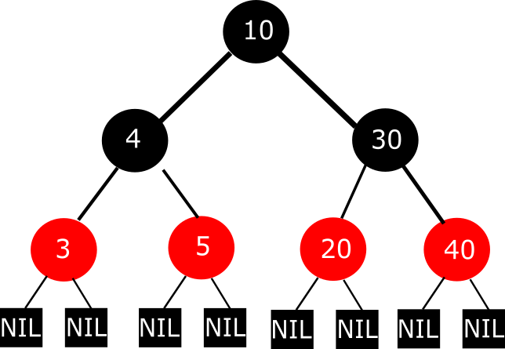

Wprowadzenie - ogólne zasady
Drzewo czerwono-czarne jest samorównoważącym się binarnym drzewem poszukiwań (ang. self-balancing binary
search tree).
Zachowuje podstawowe własnosci drzew BST:
- klucz lewego dziecka < klucz rodzica < klucz prawego dziecka
- klucze w drzewie są posortowane (konsekwencja powyższego)
- klucze po lewej stronie węzła są mniejsze od tego węzła (konsekwencja pierwszego punktu)
- klucze po prawej stronie węzła są większe od tego węzła (konsekwencja pierwszego punktu)
- każde węzeł może mieć 2 poddrzewa
Uwaga: jeśli nie wiesz, czym są drzewa BST lub nie pamiętasz ich właściwości - wróć proszę do materiału o
BST.
Ta wiedza jest niezbędna, aby zrozumieć działanie drzew RBT!
Jednak na ten typ drzew zostały nałożone dodatkowe obostrzenia:
- każdy węzeł może być koloru albo czerwonego, albo czarnego
- jeśli węzeł jest czerwony, to jego dzieci MUSZĄ być czarne
- korzeń oraz liście drzewa są czarne
- każda ścieżka z dowolnego węzła do liścia ma taką samą ilość czarnych węzłów

Uwaga: Nasza wizualizacja drzewa RBT, którą zobaczysz później nie pokazuje liści. Pamiętaj, że domyślnie one
tam są!
Jakie operacje możemy wykonać na naszym drzewku? Standardowe operacje, tj.:
- Wyszukać węzeł po kluczu
- Dodać węzeł
- Usunąć węzeł
Co ważne, dwie ostatnie operacje mogą wymagać rotacji, aby naprawić "drzewko" - czyli zachować wszystkie jego
właściwości
Jeśli o to zadbamy, drzewko "odwdzięczy się" nam w postaci złożoności obliczeniowej na poziomie O(logN) dla
wszystkich operacji.
A co z zajętością przestrzeni? Tu nie ma rady - musimy trzymać wszystkie węzły, zatem wynosi ona O(N).